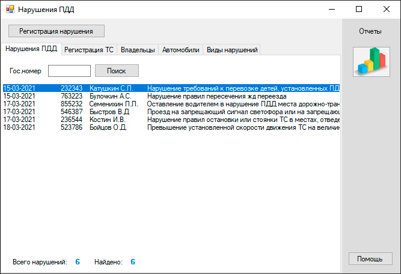
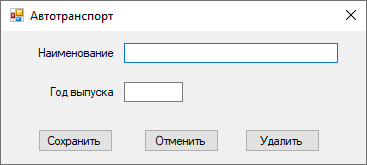
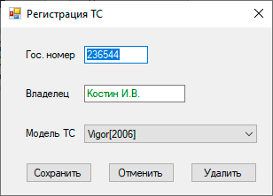

Программа предназначена для учета нарушений правил дорожного движения. Имеет следующие возможности:

В верхней части главного окна программы для основоной операции выпонения "Регистрация нарушения" имеется кнопка.
Ниже во вкладках можно переключаться между таблицами данных составляющих основу для регистрации нарушения ПДД,такие как "Регистрация авторанспорта","Владельцы ТС","Автомобили (ТС)","Виды нарушений".
В правой части окна панель отчетов.
Регистрировать нарушение возможно при имеющихся данных по регистрации траснспорта, владельцев ТС, справочных данных по автомобилям и справочника видов нарушений. Для демонстрации работы программы таки данные уже имеются. В этом можно убедится перейдя на соответствующую вкладку в панели данных.
При наличии в БД номера ниже поля ввода отобразятся данные по владельцу и автотранспорту. в противном случае зарегистрировать нарушение станет невозможным. При корретном вводе данных кнопка "Сохранить" становится доступной
после сохранения новых данных о нарушении в списке должна появиться новая запись.
Регистрация транспортного средства зависит от наличия данных по регистрируемум автомобилю и его владельцу.
Если номер уже имеется в БД, то новая регистрация не выполнится.
В данном случае независит есть ли в БД введенные Вами данные по владельцу или нет.
После корректного заполнения полей формы ввода кнопка "Сохранить" станет доступной.
Порядок создания записей о транспорте, владельцах ТС и видах нарушений однотипный. На каждой вкладке панели данных соответствующего раздела есть кнопка как например
"Новый владелец","Новый автотранспорт","Новый вид нарушения". После нажатия на которую выйдет окно с полем ввода значения выбранного раздела.

Как например окно "Автотранспорт". Если данные вводимые форму будут полностью совпадать с уже имеющимися, то новой записи не образуется.
Такое правило действительно так же и для "Владельцев" и для "Видов нарушений"
Когда есть необходимость исправить неточность в записях, достаточно сделать двойной клик в списке на соответствующей строке.
На свое усмотрение поменяйте дату события и его вид. Измененять гос.номера ТС можно только на тот который уже имеется в БД. Иначе невозможно сохранить данные - кнопка "Сохранить" недоступна до тех пор пока не буду корректны все данные ввода
Так же как и во всех списках данных редактирование осуществляется двойным кликом мыши.
При изменении гос.номера ТС необходимо учитывать что данные не сохранятся если буде введен несуществующий в БД номер.
Изменив имя владельца следует учесть что если введенное имя сопадает с уже имеющимся в БД, то регистрационные данные будут записаны на существующего владельца, а иначе, если имя владельца введено впервые, то запись о владельце будет новой и регистрация будет оформлена как на нового владельца ТС. Убедится в том что владелец добавился в БД Вы можете в соответствующем разделе.
Разработчик оставляет право на оперативное изменение как во внешнем виде программы так и исправление работы ее алгоритма. В связи с этим некоторые разделы документации могут незначительно несоответствовать реальной работы программы. Однако в целом можно считать документацию актуальной.
Для демонстрации программы можно инициализировать БД клавишами ALt+Shift+Backspace. Для заполнения данными нажмите Alt+Backspace.